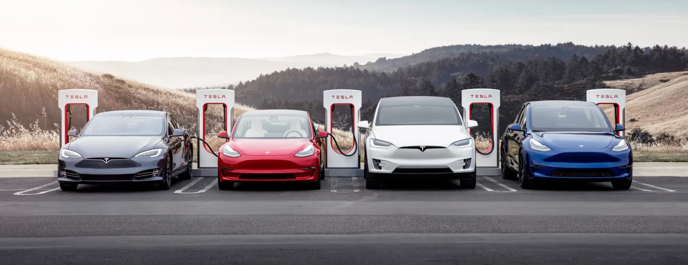
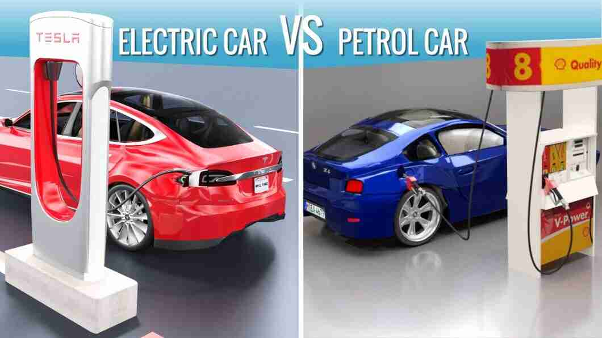

An electric vehicle (EV) is a vehicle that uses one or more electric motors for propulsion.
It can be powered by a collector system, with electricity from extravehicular sources, or it
can be powered autonomously by a battery (sometimes charged by solar panels, or by converting
fuel to electricity using fuel cells or a generator). EVs include, but are not limited to,
road and rail vehicles, surface and underwater vessels, electric aircraft and electric spacecraft.
For road vehicles, together with other emerging automotive technologies such as autonomous driving,
connected vehicles and shared mobility, EVs form a future mobility vision called Connected,
Autonomous, Shared and Electric (CASE) Mobility.
EVs first came into existence in the late 19th century, when electricity was among the preferred methods for motor vehicle propulsion, providing a level of comfort and ease of operation that could not be achieved by the gasoline cars of the time. Internal combustion engines were the dominant propulsion method for cars and trucks for about 100 years, but electric power remained commonplace in other vehicle types, such as trains and smaller vehicles of all types.
Electric motive power started in 1827, when Hungarian priest Ányos Jedlik built the first crude but viable electric motor, which used a stator, rotor, and commutator; and the next year he used it to power a small car.[14] In 1835, professor Sibrandus Stratingh of the University of Groningen, in the Netherlands, built a small-scale electric car, and sometime between 1832 and 1839, Robert Anderson of Scotland invented the first crude electric carriage, powered by non-rechargeable primary cells.[15] American blacksmith and inventor Thomas Davenport built a toy electric locomotive, powered by a primitive electric motor, in 1835. In 1838, a Scotsman named Robert Davidson built an electric locomotive that attained a speed of four miles per hour (6 km/h). In England a patent was granted in 1840 for the use of rails as conductors of electric current, and similar American patents were issued to Lilley and Colten in 1847.

The entry of electric vehicles in the automotive industry has made purchasing four-wheelers even more challenging for car enthusiasts. While the price of petrol is rapidly rising and pollution is at its peak, individuals are willing to give electric vehicles a try.
If you are someone stuck in the debate on electric car vs petrol car, here is a detailed discussion on each type and their differences to help you out.
Petrol cars refer to those motor cars which use a spark-ignited internal combustion engine that consumes petrol or gasoline. The pros and cons of petrol cars are as follows -
Electric cars refer to those vehicles that run partially or fully on electric power. These vehicles store the electricity in rechargeable batteries that help start the electric motor, which in turn helps rotate wheels.